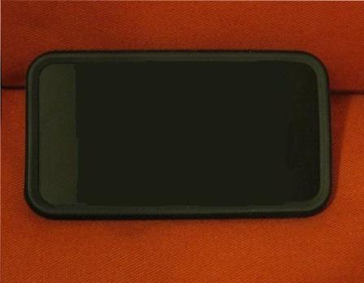
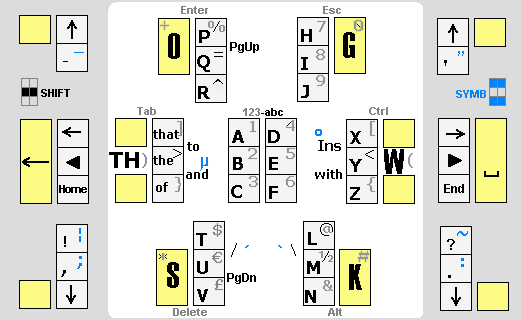
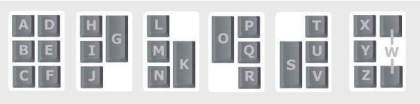
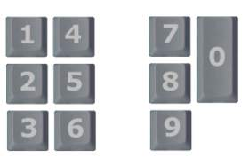

The full GKOS character set:
Select language to type:
(Note: This is a bit historical demo! Please use the Android GKOS application for up-to-date testing of the concept.)
English
Fin/Swe
French
German
Greek
Icelandic
(Korean, not the latest layout version!!!)
Nor/Dan
Russian
Sanskrit
Spanish
-vers.30 Apr 2010 (Korean works on Ubuntu 9.04)
Use qwerty keys
SDF JKL
as GKOS keys
CBA DEF
. Put index fingers on
F
(
A
) and
J
(
D
). - Note: Not all qwerty keyboards can manage more than 3 simultaneous key presses.

abc-123 = All keys down

Layouts for more languages...